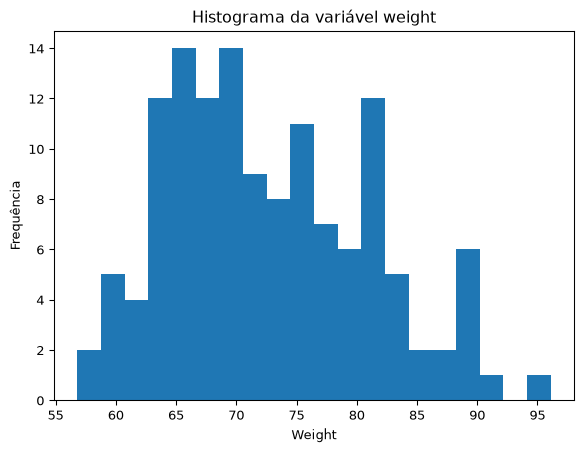

Nesta seção, com o conjunto de dados dos estudantes disponível em SOGA-Py. Você pode carregá-lo diretamente como um recurso da web. Vamos importar o conjunto de dados para o Python como um objeto DataFrame do pandas utilizando o método read_csv:
import pandas as pdimport numpy as npestudantes = pd.read_csv("https://userpage.fu-berlin.de/soga/data/raw-data/students.csv")estudantes.head()
stud.id
name
gender
age
height
weight
religion
nc.score
semester
major
minor
score1
score2
online.tutorial
graduated
salary
1
833917
Gonzales, Christina
Female
19
160
64.8
Muslim
1.91
1st
Political Science
Social Sciences
NaN
NaN
0
0
NaN
2
898539
Lozano, T'Hani
Female
19
172
73.0
Other
1.56
2nd
Social Sciences
Mathematics and Statistics
NaN
NaN
0
0
NaN
3
379678
Williams, Hanh
Female
22
168
70.6
Protestant
1.24
3rd
Social Sciences
Mathematics and Statistics
45.0
46.0
0
0
NaN
4
807564
Nem, Denzel
Male
19
183
79.7
Other
1.37
2nd
Environmental Sciences
Mathematics and Statistics
NaN
NaN
0
0
NaN
5
383291
Powell, Heather
Female
21
175
71.4
Catholic
1.46
1st
Environmental Sciences
Mathematics and Statistics
NaN
NaN
0
0
NaN
O conjunto de dados estudantes consiste em 8.239 linhas, cada uma representando um estudante específico, e 16 colunas, cada uma correspondendo a uma variável/característica relacionada a esse estudante. Neste estudo, considera-se o conjunto completo de estudantes disponível na base de dados como a população de interesse. Além disso, a variável de interesse é o peso (massa corporal).
Aqui iremos considerar a variância conhecida, ou seja, iremos calcular diretamente a partir dos dados completos.
9.0.2 Variância e desvio-padrão populacionais
Como a base contém todos os 8.239 estudantes considerados neste estudo, a variância calculada corresponde à variância populacional.
N =len(estudantes)sigma2 = estudantes["weight"].var(ddof=0) # variância populacional sigma = estudantes["weight"].std(ddof=0) # desvio-padrão populacional print(f"Tamanho da população: {N}") print(f"Variância populacional: {sigma2:.2f}") print(f"Desvio-padrão populacional: {sigma:.2f} kg")
Tamanho da população: 8239
Variância populacional: 74.56
Desvio-padrão populacional: 8.63 kg
9.0.3 Objetivo
Avaliar se a massa corporal média dos estudantes difere da massa corporal média da população adulta europeia, reportada por Walpole et al. (2012) como 70,8 kg. As hipóteses são:
\[H_0: \mu = 70,8\]
e
\[H_A: \mu \neq 70,8\] em que \(\mu\) representa a massa corporal média dos estudantes.
9.0.4 Cálculo do tamanho mínimo de amostra
Foi adotada uma diferença mínima detectável de 2 kg em relação à média de referência de 70,8 kg. O tamanho amostral foi calculado para garantir poder estatístico de 80% e nível de significância de 5%, ou seja,
Como o \(p\)-valor calculado (0,004493) é consideravelmente inferior ao nível de significância adotado (0,05), a decisão estatística é rejeitar a hipótese nula, ou seja, de que a massa corporal média dos estudantes é igual a massa corporal média da população adulta europeia. Sendo assim, existe evidência estatisticamente significativa de que a média populacional é diferente do valor inicialmente suposto.
Agora iremos considerar a situação mais realista que é quando a variância populacional é desconhecida. Para calcular o tamanho mínimo de amostra iremos precisar estimar a variância populacional. Para isto, iremos usar uma amostra piloto.
Tamanho da amostra piloto: 50
Variância amostral: 67.82
Desvio-padrão amostral: 8.24 kg
stud.id
name
gender
age
height
weight
religion
nc.score
semester
major
minor
score1
score2
online.tutorial
graduated
salary
3165
802420
Stravia, Kelly
Female
23
158
67.2
Catholic
3.85
1st
Political Science
Environmental Sciences
NaN
NaN
0
0
NaN
7715
307406
Ha, Edmond
Male
21
185
80.5
Catholic
2.21
5th
Social Sciences
Economics and Finance
55.0
46.0
0
1
30038.217858
614
786879
Benson, Joseph
Male
22
174
75.2
Catholic
1.05
5th
Environmental Sciences
Mathematics and Statistics
74.0
70.0
0
1
39145.213015
1458
807680
Johnson, Xin
Male
24
187
83.4
Orthodox
1.64
3rd
Mathematics and Statistics
Environmental Sciences
84.0
90.0
0
0
NaN
4657
142413
Ward, Sendy
Female
23
155
61.6
Muslim
2.07
1st
Social Sciences
Mathematics and Statistics
NaN
NaN
0
0
NaN
9.1.2 Cálculo do tamanho mínimo de amostra
from scipy.stats import talpha =0.05power =0.80delta =2.0z_alpha = norm.ppf(1- alpha/2) z_beta = norm.ppf(power) n0 = ((z_alpha + z_beta) * s/delta)**2print(f"Tamanho inicial da amostra (usando quantil da normal padrão): {np.ceil(n0):.0f}")t_alpha = t.ppf(1- alpha/2, df = n0-1)t_beta = t.ppf(power, df = n0-1)n1 = ((t_alpha + t_beta) * s/delta)**2print(f"Tamanho inicial da amostra (usando quantil da t-student): {np.ceil(n1):.0f}")
Tamanho inicial da amostra (usando quantil da normal padrão): 134
Tamanho inicial da amostra (usando quantil da t-student): 136
Como a população possui apenas 8.239 indivíduos, aplicaremos uma correção para população finita:
n = (n1 * N)/(n1 + N -1) n =int(np.ceil(n)) print(f"Tamanho corrigido da amostra: {n}")
Tamanho corrigido da amostra: 133
9.1.3 Seleção da amostra aleatória
Iremos considerar os estudantes coletados na amostra piloto na amostra final considerada para o estudo. Assim, iremos selecionar mais 81 estudantes. Como a semente aleatória é a mesma da amostra piloto, basta selecionar normalmente os 131 estudantes.
Agora, vamos testar a suposição de normalidade plotando um gráfico de probabilidade normal, frequentemente chamado de QQ plot. Se a variável tiver distribuição normal, o gráfico de probabilidade normal deverá ser aproximadamente linear.
import matplotlib.pyplot as pltimport scipy.stats as statsfig, ax = plt.subplots()stats.probplot(amostra["weight"], dist="norm", plot=ax)ax.set_title("Q-Q plot (amostra)")ax.set_ylabel("Quantis amostrais")ax.set_xlabel("Quantis teóricos")plt.show()
Observamos que os dados da amostra apresentam algum ruído, os desvios da linha reta na parte inferior sugerem que a distribuição dos dados é ligeiramente assimétrica, como pode ser visto no histograma abaixo.
plt.hist(amostra["weight"], bins=20)plt.title("Histograma da variável weight")plt.xlabel("Weight")plt.ylabel("Frequência")plt.show()

Podemos usar algum teste de hipótese para teste a normalidade dos dados. As hipóteses do teste são:
Hipótese Nula: Os dados vem de uma distribuição normal.
Hipótese Alternativa: Os dados observados não vêm da distribuição normal.
from statsmodels.stats.diagnostic import lillieforslilliefors(amostra["weight"], dist='norm')
from scipy.stats import andersonanderson(amostra["weight"], dist='norm')
/tmp/ipykernel_904065/1331499744.py:3: FutureWarning: As of SciPy 1.17, users must choose a p-value calculation method by providing the `method` parameter. `method='interpolate'` interpolates the p-value from pre-calculated tables; `method` may also be an instance of `MonteCarloMethod` to approximate the p-value via Monte Carlo simulation. When `method` is specified, the result object will include a `pvalue` attribute and not attributes `critical_value`, `significance_level`, or `fit_result`. Beginning in 1.19.0, these other attributes will no longer be available, and a p-value will always be computed according to one of the available `method` options.
anderson(amostra["weight"], dist='norm')
AndersonResult(statistic=np.float64(1.25076662006623), critical_values=array([0.558, 0.627, 0.748, 0.868, 1.029]), significance_level=array([15. , 10. , 5. , 2.5, 1. ]), fit_result= params: FitParams(loc=np.float64(72.6751879699248), scale=np.float64(8.280923733561751))
success: True
message: '`anderson` successfully fit the distribution to the data.')
from scipy.stats import jarque_berajarque_bera(amostra["weight"])
Se considerarmos um nível de significância de 1%, temos que a maioria dos testes não rejeita a hipótese de que os dados são provenientes de uma população normal. No entanto, ao considerarmos um nível de 5% temos que o resultado se inverte.
9.1.5 Teste t para uma média com variância desconhecida
Segundo a Deutsche Bischofskonferenz (Conferência Episcopal Alemã, DBK), aproximadamente 24% da população alemã se declara católica. Neste estudo, pretende-se investigar se a proporção de estudantes católicos difere da proporção observada na população geral da Alemanha.
Para isso, será obtida uma amostra aleatória de estudantes, a partir da qual será realizada uma inferência estatística sobre a proporção populacional. Em particular, o objetivo é testar a hipótese de igualdade entre a proporção de católicos no grupo de estudantes e o valor de referência de 0,24. Iremos considerar a seguintes hipótese:
\[H_0: p = 0,24\]
e
\[H_A: p \neq 0,24\] em que \(p\) representa a proporção dos estudantes que são católicos.
9.1.9.1 Cálculo do tamanho mínimo de amostra
Desejamos ter 80% de poder para detectar diferenças de pelo menos 2 pontos percentuais em relação ao valor de referência. Além disso, o valor de \(p=0.5\) maximiza a variância \(p(1-p)\) e, portanto, produz o maior tamanho amostral possível.
Ao nível de significância de 5%, os dados fornecem evidências suficientes para concluir que a proporção de estudantes católicos difere da proporção de 24% observada na população alemã segundo a DBK. O resultado sugere que a composição religiosa da população estudantil não reflete exatamente a composição religiosa da população geral.
9.1.10 Exemplo Prático
O Python permite realizar um teste t com variâncias combinadas utilizando a função ttest_ind_from_stats(), disponível no módulo stats do pacote scipy.
No exemplo, assumiremos que as variâncias das duas amostras são iguais. Portanto, o argumento equal_var da função será definido como True.
Para praticar a aplicação do teste t com variâncias combinadas, utilizaremos o conjunto de dados estudantes.
9.1.10.1 Hipóteses
Queremos verificar se existe diferença entre os ganhos de homens e mulheres graduados. Desta forma, queremos testar as seguintes hipóteses:
\[H_0: \mu_1 = \mu_2\]
e
\[H_A: \mu_1 \neq \mu_2\] em que \(\mu_1\) e \(\mu_2\) representam as médias salariais dos estudantes graduados do sexo masculino e feminino, respectivamente.
9.1.10.2 Preparação dos dados
Começamos com a preparação dos dados, que inclui as seguintes etapas:
Subdividimos o conjunto de dados com base na variável binária graduated, que indica se o estudante já se formou. O valor 1 representa “formado”, enquanto 0 indica “não formado”.
Em seguida, dividimos o conjunto de dados por gênero (masculino e feminino).
Depois, selecionamos aleatoriamente uma amostra de 50 estudantes do sexo feminino e 50 do sexo masculino de cada subconjunto e extraímos a média do salário anual (em euros) como variável de interesse.
Armazenaremos as informações de salário dos grupos masculino e feminino em variáveis separadas chamadas amostra_homens e amostra_mulheres. A informação relevante está armazenada na coluna salary.
Razão entre as variâncias da amostra piloto: 1.34
Tamanho inicial da amostra: 62
A razão entre os desvios-padrão é aproximadamente 1,34 e, portanto, nota-se que o suposição de igualdade dos desvios-padrão populacionais parece razoável.
tol =1max_iter =100n0 = np.ceil(n0)for i inrange(max_iter): gl =2*n0 -2 t_alpha = t.ppf(1- alpha/2, df=gl) t_beta = t.ppf(power, df=gl) n_novo = (((t_alpha + t_beta)/delta)**2) * (s21_piloto + s22_piloto)# normalmente arredondamos para cima n_novo = np.ceil(n_novo)if n_novo == n0:break n0 = n_novon =int(np.ceil(n0)) print(f"Convergiu em {i+1} iterações")print(f"n por grupo = {int(n)}")
Convergiu em 2 iterações
n por grupo = 63
9.1.11 Seleção da amostra
amostra_homens = homens_graduados.sample(n, random_state =24, replace =False)["salary"] #Sorteia amostra de homens e pega salárioamostra_mulheres = mulheres_graduadas.sample(n, random_state =24, replace =False)["salary"] #Sorteia amostra de mulheres e pega salário
import matplotlib.pyplot as pltimport scipy.stats as statsplt.figure(figsize=(12,5))ax = plt.subplot(1, 2, 1)qq = stats.probplot(amostra_homens, dist="norm", plot = plt)ax.set_title("Q-Q plot para homens (amostra)")ax.set_ylabel("Quantis Amostrais")ax = plt.subplot(1, 2, 2)qq = stats.probplot(amostra_mulheres, dist="norm", plot = plt)ax.set_title("Q-Q plot para mulheres (amostra)")ax.set_ylabel("Quantis Amostrais")
Text(0, 0.5, 'Quantis Amostrais')
Observamos que os dados da amostra apresentam certo nível de ruído, mas ainda seguem aproximadamente uma distribuição normal. Além disso, verificamos se os desvios-padrão das duas populações são aproximadamente iguais. Como regra prática, a condição de igualdade dos desvios-padrão populacionais é considerada satisfeita se a razão entre o maior e o menor desvio-padrão amostral for inferior a 2.
Ao nível de significância de 1%, os dados fornecem evidências muito fortes para concluir que o salário médio dos graduados do sexo masculino é diferente do salário médio das graduadas do sexo feminino.
9.2 Inferências para duas médias populacionais com amostras independentes e variâncias desiguais
No exemplo, anterior poderíamos aplicar o teste de maneira prática e fácil usando a função stats.ttest_ind() com o argumento equal_var = False.
resultado_teste_Welch = stats.ttest_ind(amostra_homens, amostra_mulheres, equal_var =False, alternative ="two-sided")resultado_teste_Welch
Para ilustrar a aplicação do teste t pareado para amostras dependentes, estamos interessados em verificar se um tutorial online de Estatística auxilia os estudantes a melhorar seu desempenho acadêmico.
Existem três variáveis de interesse no conjunto de dados dos estudantes:
A variável `online.tutorial é uma variável binária que assume valor 1 se o estudante concluiu o tutorial online de Estatística e 0 caso contrário.
As variáveis score1 e score2 representam as notas (de 0 a 100) obtidas em duas avaliações de Matemática e Estatística. Quanto maior a nota, melhor o desempenho do estudante.
Observe que a primeira avaliação ocorre antes da participação dos estudantes no tutorial online de Estatística. A participação no tutorial é opcional, mas as duas avaliações são obrigatórias para todos os estudantes. A primeira prova (score1) é realizada no início do terceiro semestre, enquanto a segunda prova (score2) é realizada ao final do terceiro semestre.
Neste contexto, há duas questões de pesquisa de interesse:
Verificar se o grupo de estudantes que participou do tutorial online de Estatística apresentou melhor desempenho na segunda avaliação em comparação com a primeira avaliação.
Avaliar o desempenho do grupo de estudantes que não participou do tutorial online, comparando os resultados obtidos na primeira e na segunda avaliação.
9.2.2 Hipóteses
A hipótese nula afirma que não há diferença entre as médias das notas dos dois exames:
\[H_0: \mu_1 = \mu_2\]
A hipótese alternativa indica que os alunos têm melhor desempenho no segundo exame:
\[H_A: \mu_1 < \mu_2\]
Isso caracteriza um teste de hipótese unilateral à esquerda
Ao nível de significância de 1%, os dados fornecem evidência forte para concluir que as notas dos estudantes em exames melhoram após realizarem um tutorial online de aprendizagem de estatística.